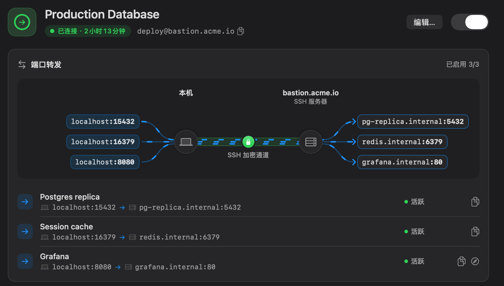
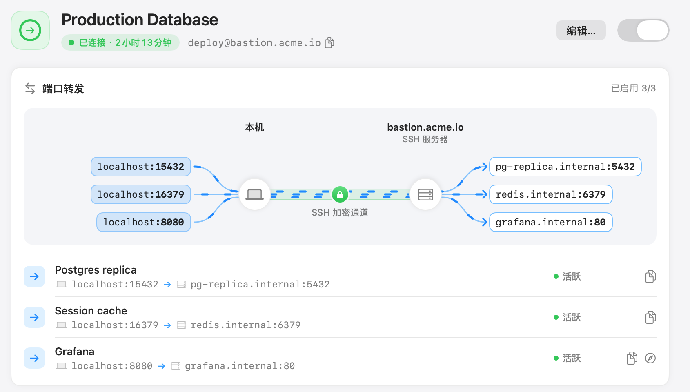

Porthole 舷窗：Apple 芯片原生的 SSH 隧道管理工具
为 Apple 芯片打造的 SSH 隧道管理工具。
把服务器后面的数据库、监控面板和内网网站，接到你 Mac 的本地端口上。
- macOS 14 及以上
- Apple 芯片
- 10 种界面语言
- 在 GitHub 开源
-
应用连接本机端口
数据库客户端、浏览器和脚本照常连接
localhost:15432。对它们来说，服务就在这台 Mac 上。 -
所有规则共用一条加密连接
Porthole 调用 macOS 自带的 OpenSSH，同一条隧道里的规则走同一个 ssh 连接。断线后按 2、4、8…30 秒逐步重试，Mac 从睡眠中唤醒后会主动刷新。
-
服务器替你连到内网
流量从
bastion.acme.io出来，再去往只有它能访问的地址：数据库副本、Redis 和 Grafana。

应用连接本机端口
数据库客户端、浏览器和脚本照常连接
localhost:15432，就像服务在这台 Mac 上。所有规则共用一条加密连接
Porthole 调用 macOS 自带的 OpenSSH；断线自动重连，Mac 唤醒后主动刷新。
服务器替你连到内网
流量从 SSH 服务器出来，再去往只有它能访问的地址。
三种转发规则
一条隧道里可以放多条规则，类型随时切换。下面的图示和 Porthole 编辑器里的一样。
在本地端口访问远程服务
本机应用连接 localhost:5432，流量经 server.example.com 转发，再由它连接到 db.internal:5432。适合数据库、Redis 和内网监控面板。
ssh -N -L 5432:db.internal:5432 server.example.com把本机服务分享给服务器
server.example.com 在端口 8080 上监听，那里收到的连接会经隧道回到本机，再连接到 localhost:3000。适合把开发中的网页给同事看，或接收 webhook 回调。
ssh -N -R 8080:localhost:3000 server.example.com通过服务器上网
本机在 localhost:1080 上运行 SOCKS4/5 代理。把浏览器或应用指向它，所有连接都会从 server.example.com 出去，适合访问只对服务器开放的网站。
ssh -N -D 1080 server.example.com
颜色就是状态
每条隧道画成一个领结：左边是本机这一侧的地址，右边是服务器那一侧，所有规则汇入中间同一条 SSH 通道。实心标签是连接进来的监听端口，空心标签是最终到达的地址。
- 本地转发
- 远程转发
- SOCKS 代理
- 正在连接
- 未连接
通道中间的锁在连上时变绿，失败时变成红色的 ✕。经代理或跳板机时，通道下方会标出“经由 …”。
安全、稳定，也不打扰
- 密码只放在钥匙串
- 登录密码、私钥口令、代理和跳板机的密码都只存在 macOS 钥匙串里。设置文件和导出文件都不含密码。
- 新服务器先核对指纹
- 第一次连接时显示服务器的指纹，由你确认后才连接。主机密钥一旦变化，一律拒绝。
- 代理与跳板机
- 可以经 SOCKS4、SOCKS5、HTTP 代理（支持用户名和密码）或跳板机（ProxyJump）连接服务器。
- 断线自动重连
- 按 2、4、8、16、30 秒逐步拉长间隔重试；Mac 从睡眠中唤醒、网络恢复后会自动刷新隧道。
- 端口被占用，直接告诉你是谁
- 连接前先检查本地端口，被占用时指出是哪个进程和它的 PID，不用再去翻
lsof。 - 不留残余进程
- Porthole 意外退出后留下的 ssh 进程，会在下次启动时自动清理。
- 读得懂
~/.ssh/config - 自动登录会用上 ssh-agent 和你已有的密钥；带转发的 Host 条目可以直接导入成隧道。
- ssh 命令一目了然
- 编辑器里实时预览完整的 ssh 命令，也可以一键拷贝到终端里用。
- 10 种界面语言
- 简体中文、繁體中文、English、日本語、한국어、Deutsch、Français、Español、Português、Русский，可跟随系统或单独指定。
- 浅色、深色、跟随系统
- 用工具栏按钮、菜单栏面板或 ⇧⌘D 随时切换，所有窗口和对话框一起变。
从 SSH Tunnel 搬过来
Codinn 的 SSH Tunnel 只有 Intel 版本，在以后的 macOS 上将无法运行。Porthole 的功能与它对齐，并能直接导入它的导出文件。
- 在 SSH Tunnel 里全选隧道，选择 File ▸ Export Selected Tunnels… 导出。
- 在 Porthole 里选择 文件 ▸ 导入隧道…（⇧⌘I），选中刚才的文件。
- 导出文件不含密码。第一次连接时输入一次，勾选“保存到我的钥匙串”，以后就不用再输。
下载 Porthole
1.0.0
下载 zip- 系统要求
- macOS 14 Sonoma 或更新版本，Apple 芯片（M 系列）
- 源代码
- github.com/bryan31/porthole（MIT 许可证）
- 发布日期
- 2026-11-26
- SHA-256
-
45db18c7ab9fddbc7b4cc6cfb068f43441c3079efff66d9d83b0c7604842e831
安装
-
解压，拖进“应用程序”
双击下载的 zip，把 Porthole.app 拖到“应用程序”文件夹。
-
第一次打开
Porthole 还没有经过 Apple 公证，第一次打开时 macOS 会拦下它。打开 系统设置 ▸ 隐私与安全性，在“安全性”一栏找到关于 Porthole 的提示，点“仍要打开”并确认。之后就能正常打开了。
熟悉终端的话，也可以直接移除隔离标记：
xattr -dr com.apple.quarantine /Applications/Porthole.app -
创建第一条隧道
按 ⌘N，填好服务器和要转发的端口，点“创建并连接”。详细步骤见使用说明。
校验下载的文件：shasum -a 256 ~/Downloads/Porthole-1.0.0.zip，输出应与上面的 SHA-256 一致。